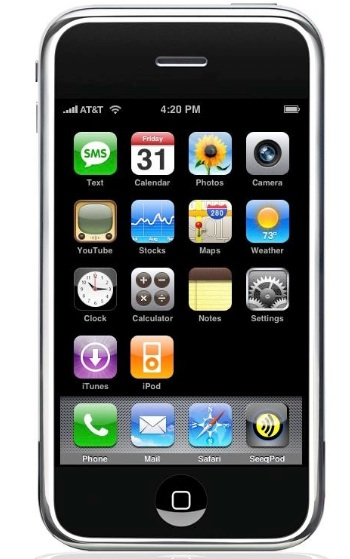

ZOUBA
Zouba allows a user to search the available transportation routes from a certain location and save these routes for later on.
This is an HTML5 based project that uses geocoding and the Reittiopas API. It is firstly targeting Android Phones, but it should also run in other devices.
Download source code for Android
 Download source code for iOS
To install and run ZouBa :
- install google chrome on your desktop machine : https://www.google.com/chrome
- open url chrome://extensions
- check the box next to 'Developer mode'
- click 'Load inpacked extension...'
- select the client/common directory from the git clone
- click on the 'new tab' button in chrome (little trapezoid next to the top tab)
- click on the 'ZouBa' icon (you may have to click on a '>' or '<' to get to the page with the extensions on)